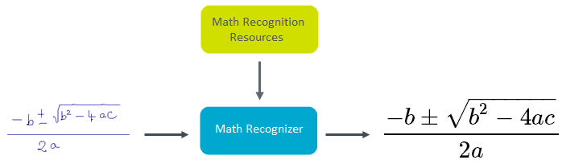

MyScript Math recognizes all kinds of equations and mathematical expressions. To do so, the recognizer identifies various subsets of elements that make up typical math expressions and sends a LaTeX or MathML result.

The Math recognizer uses resources to know how a math expression can be broken into various parts, laid out as fractions, using square roots, brackets, etc. and the various symbols and characters that can be found in each of those parts.
A list of limitations for Math recognition can be found in the appendix.
See the Reference guide for information on the mandatory and optional parameters needed for Math recognition.
The below example shows a Math recognition request where the following are to be specified:
<!DOCTYPE html>
<html>
<head>
<meta> charset="utf-8"</meta>
<title>Math - Getting started</title>
</head>
<body>
<h1>Math - Getting started</h1>
<canvas id="canvas" width="400" height="300" style="background-color: lightyellow; border: 1px solid darkgoldenrod;"></canvas>
<br/>
<pre id="result"></pre>
</body>
<!-- CryptoJS imports -->
<script type="text/javascript" src="lib/core-min.js"></script>
<script type="text/javascript" src="lib/x64-core-min.js"></script>
<script type="text/javascript" src="lib/sha512-min.js"></script>
<script type="text/javascript" src="lib/hmac-min.js"></script>
<!-- Q imports -->
<script type="text/javascript" src="lib/q.js"></script>
<!-- HandJS imports -->
<script type="text/javascript" src="lib/hand.minified-1.3.8.js"></script>
<!-- MyScriptJS imports -->
<script type="text/javascript" src="../myscript.min.js"></script>
<script>
(function () {
var result = document.getElementById("result");
var canvas = document.getElementById("canvas");
var context = canvas.getContext("2d");
var pointerId;
var instanceId;
/*
* Handle MyScript Cloud authentication keys
*/
var applicationKey = prompt("Please enter your application key", "xxxxxxxx-xxxx-xxxx-xxxx-xxxxxxxxxxxx");
var hmacKey = prompt("Please enter your HMAC key", "xxxxxxxx-xxxx-xxxx-xxxx-xxxxxxxxxxxx");
/*
* Declare an instance of MyScriptJS InkManager in order to capture digital ink
*/
var inkManager = new MyScript.InkManager();
/*
* Declare an instance of MyScriptJS MathRenderer in order to enable ink rendering
*/
var mathRenderer = new MyScript.MathRenderer();
/*
* Declare an instance of MyScriptJS Math Recognizer
*/
var mathRecognizer = new MyScript.MathRecognizer();
/*
* Set Result Types (i.e.: "LATEX")
*/
mathRecognizer.getParameters().setResultTypes(['LATEX']);
function doRecognition() {
if (inkManager.isEmpty()) {
result.innerHTML = '';
} else {
mathRecognizer.doSimpleRecognition(applicationKey, instanceId, inkManager.getStrokes(), hmacKey).then(
function (data) {
if (!instanceId) {
instanceId = data.getInstanceId();
} else if (instanceId !== data.getInstanceId()) {
return;
}
var results = data.getMathDocument().getResultElements();
for (var i in results) {
if (results[i] instanceof MyScript.MathLaTexResultElement) {
result.innerHTML = results[i].getValue();
}
}
}
);
}
}
/*
* On pointer down: Start ink rendering and ink capture.
*/
canvas.addEventListener('pointerdown', function (event) {
if (!pointerId) {
pointerId = event.pointerId;
event.preventDefault();
// Start ink rendering
mathRenderer.drawStart(event.offsetX, event.offsetY);
// Start ink capture
inkManager.startInkCapture(event.offsetX, event.offsetY);
}
}, false);
/*
* On pointer move: Continue ink rendering and ink capture.
*/
canvas.addEventListener('pointermove', function (event) {
if (pointerId === event.pointerId) {
event.preventDefault();
// Continue ink rendering
mathRenderer.drawContinue(event.offsetX, event.offsetY, context);
// Continue ink capture
inkManager.continueInkCapture(event.offsetX, event.offsetY);
}
}, false);
/*
* On pointer up: Stop ink rendering and ink capture and send recognition request.
*/
canvas.addEventListener('pointerup', function (event) {
if (pointerId === event.pointerId) {
event.preventDefault();
// Stop ink rendering
mathRenderer.drawEnd(event.offsetX, event.offsetY, context);
// Stop ink capture
inkManager.endInkCapture();
pointerId = undefined;
// Send recognition request
doRecognition();
}
}, false);
/*
* On pointer leave: Stop ink rendering and ink capture and send recognition request.
*/
canvas.addEventListener('pointerleave', function (event) {
if (pointerId === event.pointerId) {
event.preventDefault();
// Stop ink rendering
mathRenderer.drawEnd(event.offsetX, event.offsetY, context);
// Stop ink capture
inkManager.endInkCapture();
pointerId = undefined;
// Send recognition request
doRecognition();
}
}, false);
})();
</script>